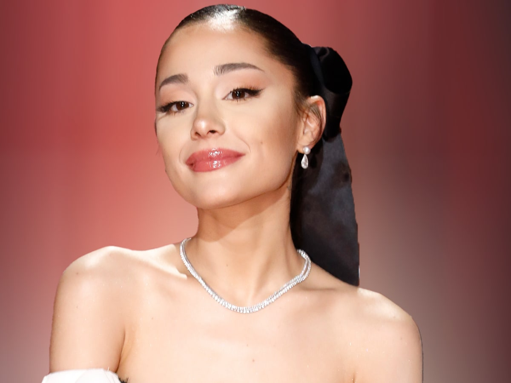

Ariana Grande-Butera nasceu em Boca Raton, Flórida. Ela é filha de Joan Grande, CEO da Hose-McCann Communications, e Edward Butera, um designer gráfico. Seu meio-irmão, Frankie Grande, é um ator, dançarino e produtor, e foi um concorrente da décima sexta edição do Big Brother dos Estados Unidos. A mesma também tem um relacionamento próximo com sua avó materna, Marjorie Grande.
Grande tem ascendência italiana, das regiões da Sicília e de Abruzzo. Seu nome foi inspirado pela Princesa Oriana de Felix the Cat: The Movie. A família dela mudou-se de Nova York para a Flórida quando sua mãe estava grávida dela, e seus pais se separaram quando ela tinha 8 ou 9 anos de idade. Frequentou a Escola Preparatória North Broward e participou de diversos teatros infantis e da comunidade.
Foi criada na religião Católica, mas abandonou o catolicismo durante o pontificado de Papa Bento XVI, citando não concordar com a posição da igreja em relação à homossexualidade, observando que seu meio-irmão Frankie é gay. Ela segue os ensinamentos da Cabala desde os doze anos de idade, junto com Frankie, acreditando que "a base está na ideia de que, se você for gentil com os outros, coisas boas acontecerão com você". Suas músicas, como "Break Your Heart Right Back", apoiam os direitos LGBTQIA+.
Grande disse que era uma criança muito "estranha", pois adorava filmes de terror e que seu vilão favorito era o personagem Freddy Krueger. Sua mãe, Joan Grande, estava preocupada que quando ela crescesse, acabasse se tornando uma serial-killer. Então, Grande começou a mostrar bastante interesse em teatro e música, principalmente por causa de seus avôs, que a fascinaram pelo estilo clássico dos anos 50. Ariana é fã assumida da saga Harry Potter e diz que tinha uma queda pelo ator Tom Felton, que interpretou Draco Malfoy nos filmes.
Quando criança, Grande se apresentou com o Teatro Infantil de Fort Lauderdale, tendo seu primeiro papel como personagem-título em Annie. Ela também se apresentou nos musicais de O Mágico de Oz e Beauty and the Beast. Aos 8 anos, ela se apresentou em um lounge de karaokê em um navio de cruzeiro e com várias orquestras e fez sua primeira aparição na televisão nacional cantando "The Star-Spangled Banner" para os Florida Panthers. Ela estudou na Pine Crest School e na North Broward Preparatory School.
Aos 13 anos, ela começou a levar mais a sério a carreira musical, embora ainda se concentrasse no teatro. Quando ela chegou em Los Angeles para se encontrar com seus managers, ela expressou o desejo de gravar um álbum de R&B: "Eu estava tipo, eu quero fazer um álbum de R&B! E eles eram como: 'Hum, esse é um objetivo incrível! Quem vai comprar um álbum R&B de uma garota de 14 anos de idade?'"
Quando se mudou com a sua família para Los Angeles após ser aprovada nos testes para Victorious, foi forçada a se distanciar de sua melhor amiga, Alexa Luria. No entanto, Grande diz que elas mantinham contato através das redes sociais e se encontravam sempre que possível. Sua outra melhor amiga é a atriz Elizabeth Gillies, que interpretou Jade West em Victorious. Grande também é amiga de Justin Bieber e a relação entre os dois foi mal interpretada, após uma foto de Bieber beijando a bochecha da cantora ser postada no Twitter. Ambos imediatamente negaram os boatos que estariam namorando.
Ela é bastante próxima de sua família e amigos e ficou bastante abalada quando perdeu seu avô devido ao câncer em 2014. Grande também diz que ama os animais e é contra os maus tratos. A mesma ama cachorros e tem dez, são eles: Toulouse, Coco, Strauss, Cinnamon, Fawkes, Ophelia, Myron, Sirius, Lafayette e Pignoli. Desde 2013, Grande assumiu ser vegana.